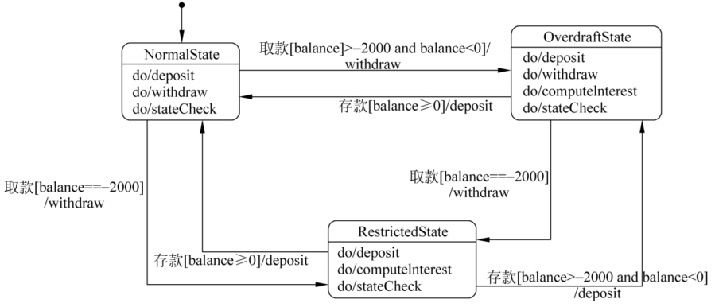
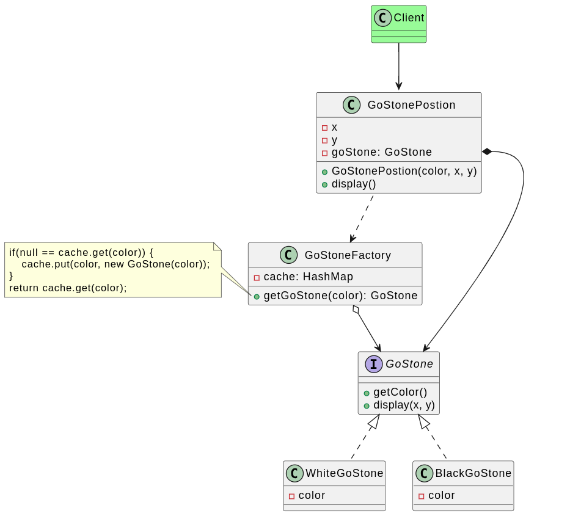

状态模式¶
在软件系统中，有些对象也如冰、水、气体一样具有多种状态，这些状态在某些情况下能够相互转换，而且对象在不同的状态下也将具有不同的行为。为了更好地对这些具有多种状态的对象进行设计，可以使用一种被称为状态模式的设计模式。
考虑如下的银行账户行为：
如果账户中余额大于或等于0，则账户的状态为正常状态（Normal State），此时用户既可以向该账户存款也可以从该账户取款。
如果账户中余额小于0，并且大于-2000，则账户的状态为透支状态（Overdraft State），此时用户既可以向该账户存款也可以从该账户取款，但需要按天计算利息。
如果账户中余额等于-2000，那么账户的状态为受限状态（Restricted State），此时用户只能向该账户存款，不能再从中取款，同时也将按天计算利息。
根据余额的不同，以上3种状态可发生相互转换

分析需求后，不难发现其规律：
不同的状态，可以进行对应的一些操作，不同状态对应的操作集可能不同
操作后，要根据结果进行状态转换，操作结果的不同可能导致状态流转到不同的状态。
首先能想到是根据if else来实现上述需求，但是这种写法有以下缺点：
扩展性差。如果新增一种状态，例如冻结状态，就需要堆原有代码进行大量修改；
可读性差。
if else过多，状态转移语句分散，不好梳理流程，代码组织散乱。
为了解决这些问题，可以使用状态模式。在状态模式中，将对象在每个状态下的行为和状态转移语句封装在一个个状态类中，通过这些状态类来分散冗长的条件转移语句，让系统具有更好的灵活性和可扩展性。
定义¶
状态模式（State Pattern）：允许一个对象在其内部状态改变时改变它的行为，对象看起来似乎修改了它的类。其别名为状态对象（Objects for States），状态模式是一种对象行为型模式。

在状态模式中，不同的状态对应不同的状态类，将对象在不同状态下的行为封装到不同的状态类中，状态转换的动作可以封装在环境类中，也可以封装在具体的状态类中。
实现¶
AccountState 充当抽象状态角色，NormalState、OverdraftState和RestrictedState充当具体状态角色。

评价¶
状态模式（State Pattern）是一种行为设计模式，允许对象在其内部状态发生改变时改变其行为。这个模式将状态相关的行为抽象到不同的状态类中，使得状态转换更加明确和易于维护。下面是状态模式的优缺点：
优点¶
简化复杂状态转换：
状态模式将状态转换逻辑分散到不同的状态类中，使得每个状态类只关注其特定的行为和状态转换，简化了复杂的状态转换逻辑。
提高代码可维护性：
由于状态类封装了特定状态的行为，添加新的状态或修改现有状态变得更加容易，不需要修改原有的代码，符合开闭原则（OCP）。
消除大量条件判断语句：
通过使用状态模式，可以避免在上下文类中使用大量的条件判断语句（如
if-else或switch-case），使代码更加简洁和清晰。
提高代码的可读性和可扩展性：
状态模式将不同状态的行为封装到独立的类中，使得代码结构更加清晰，便于理解和扩展。
状态对象可以共享：
如果某些状态是无状态的（即它们不包含特定于实例的数据），这些状态对象可以在不同上下文中共享，减少内存消耗。
缺点¶
增加类的数量：
状态模式将每个状态封装到独立的类中，可能会导致类的数量增加，增加系统的复杂性。
状态转换逻辑分散：
状态转换逻辑分散到不同的状态类中，可能会使得整体的状态转换逻辑不易跟踪和理解。
需要维护多个状态类：
每个状态都有对应的状态类，需要对这些状态类进行维护，增加了维护成本。
可能导致过度设计：
对于简单的状态转换，使用状态模式可能会显得过于复杂，导致过度设计。
示例代码¶
以下是一个使用状态模式实现简单的电灯开关的示例：
// State interface
interface State {
void handleRequest();
}
// Concrete States
class OnState implements State {
@Override
public void handleRequest() {
System.out.println("Turning light off...");
}
}
class OffState implements State {
@Override
public void handleRequest() {
System.out.println("Turning light on...");
}
}
// Context class
class LightSwitch {
private State currentState;
public LightSwitch(State initialState) {
this.currentState = initialState;
}
public void setState(State state) {
this.currentState = state;
}
public void pressSwitch() {
currentState.handleRequest();
if (currentState instanceof OnState) {
setState(new OffState());
} else {
setState(new OnState());
}
}
}
// Client code
public class Main {
public static void main(String[] args) {
LightSwitch lightSwitch = new LightSwitch(new OffState());
lightSwitch.pressSwitch(); // Output: Turning light on...
lightSwitch.pressSwitch(); // Output: Turning light off...
}
}
总结¶
状态模式通过将不同状态的行为封装到独立的状态类中，简化了复杂的状态转换逻辑，提高了代码的可维护性和可扩展性。然而，它也带来了类数量增加和状态转换逻辑分散的问题。在实际应用中，需要根据具体情况权衡使用状态模式的优缺点。
实际使用¶
招采项目¶
需求，招采项目在不同的状态下，可以执行不同的操作